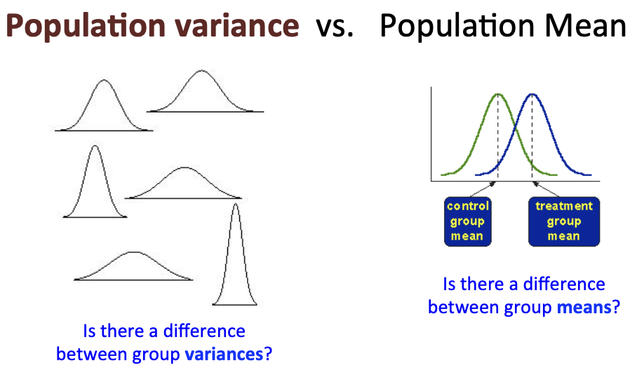

Fixed vs. Random effects

Today’s goals
Explore the concepts of:
- Fixed effects and models
- Random effects and models
- Mixed-effect models
Fixed effects
Up until now, our models only included fixed effects.
- Factors with systematic levels
- Inference on those specific levels
- Factor levels can be recreated in other studies
- We are interested in their effect on the population mean
- Example: effect of specific rates of K or N on yield
Fixed-effect models
- Only contain fixed effects
- Only have one source of variation/error (only one \(\sigma^2\))
- Can be analyzed with lm() (only handles one error)
Fixed-effect models
\[ y_{ij} = \mu + \alpha_{i} + e_{ij} \]
- \(y_{ij}\) is the observation on the jth rep. from ith N rate
- \(\mu\) is the overall mean
- \(\alpha_{i}\) is the differential effect of ith N rate
- \(e_{ij}\) is the residual corresponding to the jth replicate of N rate i
- Sources of error
\[ e_{ijk} \sim iidN(0, \sigma^2_{e}) \]
Random effects
- Factors with non-systematic levels (e.g., levels are a random sample from population of potential levels)
- Inference on population of levels
- May not be able to recreate same levels in other studies
- We are interested in their effect on the population variance
- Example: years, sites, blocks
Random-effect models
- Only contain random effects
- Have > one source of variation/error ( \(\sigma^2\))
- Can be analyzed with lme4::lmer() (can handle multiple crossed and nested error error terms)
Random-effect models
\[ y_{ij} = \mu + \alpha_{i} + e_{ij} \]
- \(y_{ij}\) is the observation on the jth rep. from ith N rate
- \(\mu\) is the overall mean
- \(\alpha_{i}\) is the random effect of ith N rate
- \(e_{ij}\) is the residual corresponding to the jth replicate within N rate i
- Sources of error
. . .
\[ \alpha_{i} \sim iidN(0, \sigma^2_{\alpha}) \]
. . .
\[ e_{ijk} \sim iidN(0, \sigma^2_{e}) \]
Random effects - variance components
The variance of an observation is expressed as:
\[ \sigma^2_{y} = \sigma^2_{a} + \sigma^2_{e} \]
\[\sigma^2_{a}\] group variance: attributed to variability between N rates
\[\sigma^2_{e}\] residual variance: attributed to variability within N rates
Methods to estimate variance components
- ANOVA (type 3 SS) or methods of moments
- Based on MS
- Can yield negative estimates
- Based on MS
- Maximum likelihood (ML)
- Maximizes the likelihood function
- Underestimates variance (bias!)
- Maximizes the likelihood function
- Restricted maximum likelihood (REML)
- Maximizes the residual likelihood function after removing fixed effects from the model
- Unbiased estimates
- Preferred method especially if unbalanced data!
- Maximizes the residual likelihood function after removing fixed effects from the model
Should I treat it as fixed or random effect?
Should I treat it as fixed or random effect?
Are you interested in specific levels of a factor? Fixed
Are you interested in using levels as a sample of levels from the population, with the goal of assessing variability (and not mean effect) at the population level? AND
Were your levels randomly selected from a population of potential levels? AND
You have sufficient number of levels (>5-8)? Random
Should I treat it as fixed or random effect?
Reliably estimating variance components require more data than reliably estimating means
If has < 5-8 levels, then variance estimates would not be accurate, may be best to treat as fixed.
Classic example: blocks in an RCBD.
Mixed-effect models
- Contain both fixed and random effects
- Have > one source of variation/error ( \(\sigma^2\))
- Can be analyzed with lme4::lmer() (can handle multiple crossed and nested error error terms)
Mixed-effect models
\[ y_{ij} = \mu + \rho_{j} + \alpha_{i} + e_{ij} \]
- \(y_{ij}\) is the observation on the jth block from ith N rate
- \(\mu\) is the overall mean
- \(\rho_{j}\) is the random effect of kth block
- \(\alpha_{i}\) is the differential effect of ith N rate
- \(e_{ij}\) is the residual corresponding to the block k of N rate i.
Mixed models sources of error
\[ \alpha_{i} \sim iidN(0, \sigma^2_{\alpha}) \]
. . .
\[ e_{ij} \sim iidN(0, \sigma^2_{e}) \]
Similarly to random-effect models, the variance of an observation is expressed as:
\[ \sigma^2_{y} = \sigma^2_{a} + \sigma^2_{e} \]
Motivational example - Treatment design
- 2-way factorial
- N fertilizer rates: 0, 100, 200 kg N/ha
- K fertilizer rates: 0, 30, 60 kg K/ha
- 3 x 3 = 9 treatment combinations
Motivational example - Experimental design
In our previous RCBD exercise, we analyzed RCBD with blocks as fixed effects, which made our model be a fixed-effect ANOVA model.
. . .
Now, let’s treat blocks as random and have a mixed-effect ANOVA model instead (N and K rates are still treated as fixed).
Reading
Make sure to read the paper “2016 Dixon - Should blocks be fixed or random?” posted on today’s class reading material.
Questions about this paper may come up in an upcoming quiz.